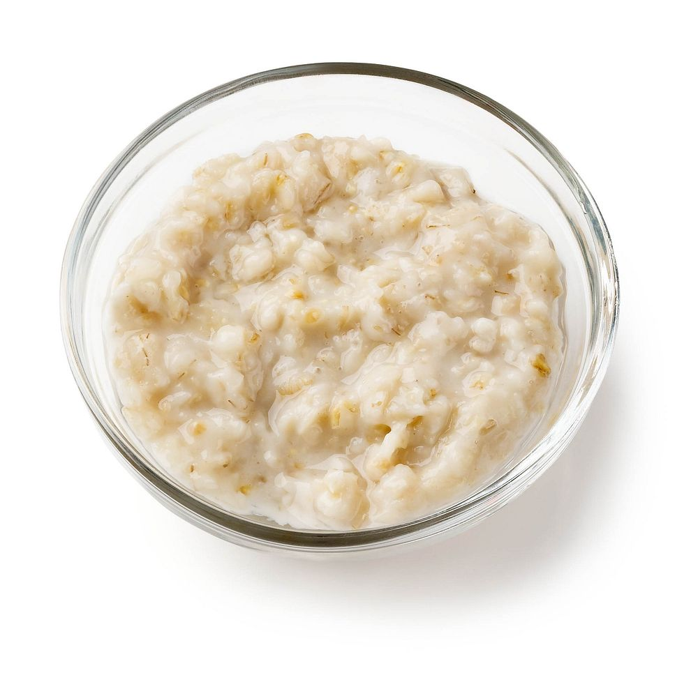

Home
How YOU Can Make Porridge!

Ingredients
- Rolled oats
- Any animal- or plant-sourced milk
Equipment
- Stove
- Saucepan
- Cup
- Mixing spoon
- Serving bowl
Instructions
- Measure 1 cup of oats and add to the saucepan. Then, measure 2 and a half cups of milk and add to the saucepan.
- Set the stove to a medium-high heat and place the saucepan onto it, continuously stirring the mixture with the spoon to prevent sticking.
- Once the mixture starts bubbling, set a medium-low heat.
- Once the porridge is at the desired consistency, turn off the heat and transfer onto the bowl.
- Let it cool down for approximately 5 minutes and enjoy your porridge!